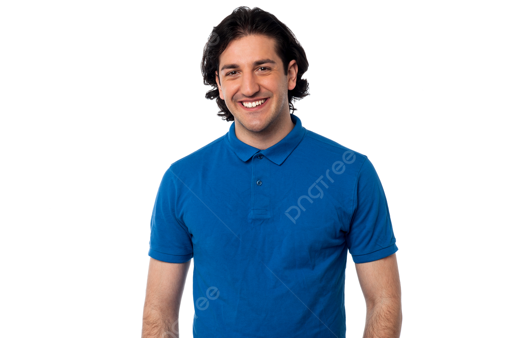
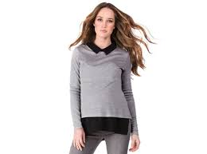
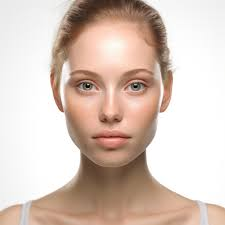

Информация о нашем магазине
Магазин "3 элемент" предлагает широкий ассортимент электроники и бытовой техники, включая смартфоны, ноутбуки, телевизоры, аудиосистемы и кухонные приборы. Кроме того, здесь можно найти аксессуары, гаджеты и товары для дома. Магазин акцентирует внимание на качестве продукции, предоставляя товары от известных брендов, а также предлагает различные акции и скидки для своих клиентов. Удобный сервис и профессиональная консультация помогают покупателям сделать правильный выбор.
Фирма "3 Элемент" была основана в начале 2000-х годов группой энтузиастов, стремящихся создать уникальные продукты в области экологии и устойчивого развития. Идея создания компании возникла из глубокого понимания важности гармонии между человеком и природой. Основатели верили, что каждый элемент окружающей среды — воздух, вода, земля, растения и животные — играет ключевую роль в нашей жизни, и их взаимодействие необходимо для достижения баланса. Первые шаги компании были связаны с разработкой экологически чистых товаров для повседневного использования. Это были многоразовые сумки, биоразлагаемые упаковки и натуральные косметические продукты. С каждым годом команда "3 Элемент" расширялась и углубляла свои исследования, находя новые пути для внедрения устойчивых практик в жизнь людей. Со временем фирма зарекомендовала себя как лидер в области экологически чистых технологий и товаров, получив признание не только в России, но и за ее пределами. "3 Элемент" начала сотрудничать с различными международными организациями, что позволило ей внедрять лучшие мировые практики и делиться своим опытом. **Миссия фирмы "3 Элемент"** Миссия "3 Элемент" заключается в следующем: 1. **Сохранение окружающей среды**: Мы стремимся минимизировать негативное воздействие на природу, предлагая экологически чистые и устойчивые продукты. 2. **Образование и просвещение**: Мы верим, что образование — ключ к изменению сознания. Наша задача — информировать людей о важности защиты окружающей среды и устойчивого развития. 3. **Инновации**: Мы постоянно ищем новые технологии и методы, которые помогут нам создавать продукты, способствующие уменьшению отходов и загрязнения. 4. **Социальная ответственность**: Мы поддерживаем местные сообщества и инициативы, направленные на защиту природы и улучшение качества жизни. 5. **Гармония**: Мы стремимся к гармонии между человеком и природой, понимая, что наше благополучие зависит от здоровья планеты. Фирма "3 Элемент" продолжает развиваться и вдохновлять людей на осознанное потребление и заботу о нашем общем доме — планете Земля.
### 1. Анна Смирнова **Должность:** Менеджер по проектам **Краткая биография:** Анна закончила Московский государственный университет по специальности «Управление проектами». В компании 3 Элемент" работает уже 5 лет, управляя множеством успешных проектов в области устойчивого развития. Увлекается экопроектами и является активным участником волонтерских движений
### 2. Сергей Иванов  **Должность:** Ведущий инженер **Краткая биография:** Сергей получил диплом инженера-строителя в Санкт-Петербургском политехническом университете. С 2018 года работает в "3 Элемент", где занимается разработкой инновационных решений для строительства. В свободное время увлекается горными походами и фотографией.
### 3. Мария Коваленко  **Должность:** Дизайнер **Краткая биография:** Мария окончила Бауманский университет, где изучала промышленный дизайн. В "3 Элемент" она отвечает за визуальную составляющую проектов, привнося креативные идеи и свежие решения. В свободное время занимается рисованием и участвует в выставках.
### 4. Алексей Петров **Должность:** Специалист по маркетингу **Краткая биография:** Алексей имеет степень магистра в области маркетинга и рекламы. В "3 Элемент" он разрабатывает стратегии продвижения и взаимодействия с клиентами. Вне работы увлекается спортом и активно участвует в марафонах.
### 5. Ольга Васильева  **Должность:** Финансовый аналитик **Краткая биография:** Ольга окончила Финансовую академию при Правительстве РФ. В "3 Элемент" она отвечает за финансовый анализ и планирование. Страстно интересуется экономикой и финансовыми рынками. В свободное время увлекается чтением и путешествиями